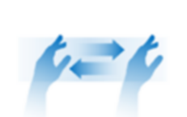

The module can trigger some common UI actions, by firing events that indicate occurrence or start/continuation/end of the controlling gesture. For all gestures, the user’s hand motion is tracked and “translated” into cursor motion. All UI control event objects contain the current cursor position. The UI control gestures and their corresponding events are described in this section.
When a UI control action occurs, the module sends a UXEventData object containing information about the event. This includes the following attributes:
| • | type – a UXEventType enumerated value indicating the type of event that occurred. |
| • | position – the 3D position of the cursor at the time of the event. See details below. |
| • | bodySide – the side (left or right) of the hand that performed the gesture. |
The cursor position is represented as X, Y and Z values in the [0,1] range:
| • | The X dimension represents the cursor’s horizontal location from left (0) to right (1). |
| • | The Y dimension represents the cursor’s vertical location, from top (0) to bottom (1). |
| • | The Z dimension represents the cursor’s depth location, from closest to the sensor (0) to farthest (1). |
To control the system cursor, the user moves his or her hand freely in front of the computer screen. The user’s hand motions are tracked and translated to cursor motions.

Figure 52: Cursor Movement Controlled by Hand Movement
The following events are generated:
| • | UXEvent_CursorVisible - fired when a hand is detected and starts controlling the cursor. |
| • | UXEvent_CursorMove - fired for each frame where the hand is still moving. |
| • | UXEvent_CursorNotVisible - fired when hand tracking is lost (for example, when the hand moves out of the sensor’s field of view). |
To activate a Select action, when the cursor is placed over a button or other “clickable” field, the user taps his or her hand forward.

Figure 53: Select (Tap) Gesture
The following event is fired:
| • | UXEvent_Select – the user selected a “clickable” field. |
There are two ways the user can perform a scroll action:
| • | Using a pinch grab gesture |
| • | Moving a hand to the edge of the screen |
For the first option, the user performs a pinching grabbing motion and moves his or her hand up/down/left/right.
Figure 54: Scroll Right
The following events are generated:
| • | UXEvent_StartScroll – a scrolling action started. |
| • | UXEvent_Scroll – a scrolling action is in progress. While the scrolling action continues (i.e. while the user’s hand is in motion), this event is fired for every frame. |
 In the case of a scroll action initiated by the pinch grab motion, the calling application must infer the scrolling direction from the cursor position contained in every event.
In the case of a scroll action initiated by the pinch grab motion, the calling application must infer the scrolling direction from the cursor position contained in every event.
| • | UXEvent_EndScroll – the scrolling action ended. |
For the second option, the user moves his or her hand to the top, bottom, left or right edge of the screen. This initiates a scroll up, down, left or right action, respectively.
The following events are generated:
| • | UXEvent_ScrollUp – a scroll-up action was started by moving the cursor to the upper screen edge. |
| • | UXEvent_ScrollDown – a scroll-down action was started by moving the cursor to the lower screen edge. |
| • | UXEvent_ScrollLeft – a scroll-left action was started by moving the cursor to the left screen edge. |
| • | UXEvent_ScrollRight – a scroll-right action was started by moving the cursor to the right screen edge. |
| • | UXEvent_CursorMove – a report on the cursor position, during the scroll action. |
| • | UXEvent_EndScroll – the scrolling action ended. |
To zoom in or out of the current display, the user performs a pinching grabing motion and pulls his or her hand away from the screen to zoom in, or towards the screen to zoom out.
The following events are generated:
| • | UXEvent_StartZoom – a zoom action started. |
| • | UXEvent_Zoom – a zoom action is in progress. While the zoom action continues (i.e. while the user’s hand is in motion), this event is fired for every frame. The event data’s z position value corresponds to the degree of the zoom. |
| • | UXEvent_EndZoom – the zoom action ended. |
To go back to the previous screen, the user makes a fist and extends his or her thumb to the side.
The following event is fired:
| • | UXEvent_Back – the user initiated a Back action. |
To go to the Windows* Start screen, the user waves his or her hand.
Figure 55: Wave Gesture
The following event is fired:
| • | UXEvent_GotoStart – the user initiated a Go to Start Screen action. |
As an optional advanced feature, you can use a set of gestures to open and control a custom “meta menu” for your application. To activate the menu, the user makes the “V sign” (raises only the index and middle fingers) for at least one seconds.
Figure 56: V Sign Gesture
You can detect user cursor movement and detection of user performs a grab gesture to create an appropriate “meta menu” for their application. To close the menu, the user places his or her hand in an open, relaxed posture, or move his or her hand outside of the camera field of view.
The following events are fired during the meta menu lifecycle:
| • | UXEvent_StartMetaCounter – the V sign gesture was identified and its duration is being timed. |
| • | UXEvent_StopMetaCounter - the V sign gesture terminated too quickly to trigger the menu. |
| • | UXEvent_ShowMetaMenu – the V sign gesture was maintained for long enough to open the meta menu. |
| • | UXEvent_HideMetaMenu – an open-hand gesture was identified; close the meta menu. |
| • | UXEvent_MetaPinch – the user performed the pinch/grab gesture while in the meta menu. |
| • | UXEvent_MetaOpenHand – the pinch/grab gesture ended while in the meta menu. |
| • | UXEvent_CursorMove – the cursor moved while the meta menu is active. |